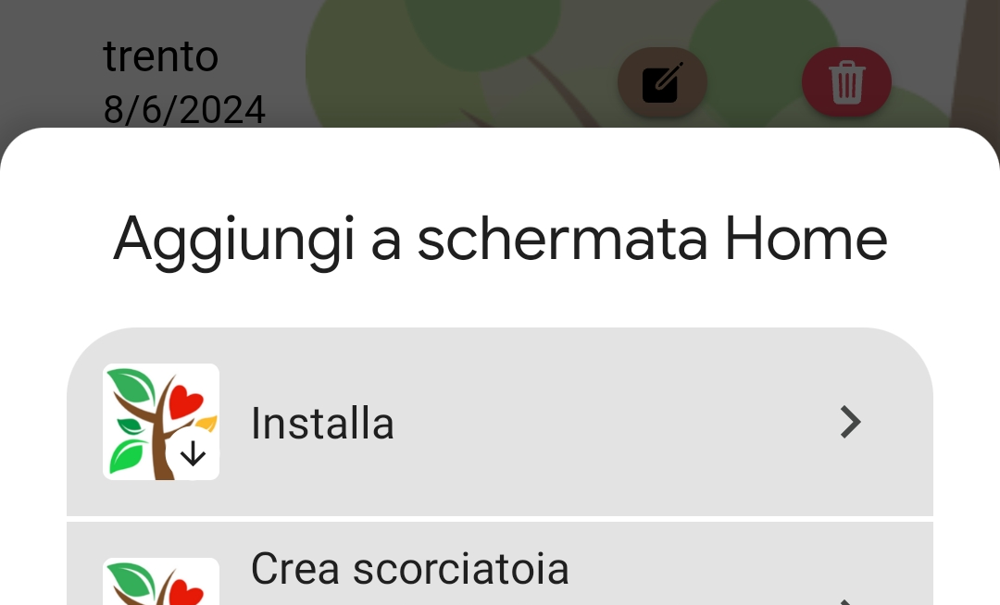

Silvacuore può essere installato sul tuo smartphone
Una volta installato potrai aprire Silvacuore dall'icona e potrai usarlo anche senza connessione Internet
Apri il menu del browser Chrome

Seleziona Installa App
Premi il bottone per condividere

Seleziona Aggiungi alla schermata Home

Premi il bottone sulla barra degli indirizzi per installare la app
Conferma l'installazione